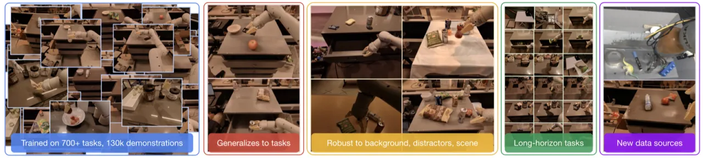
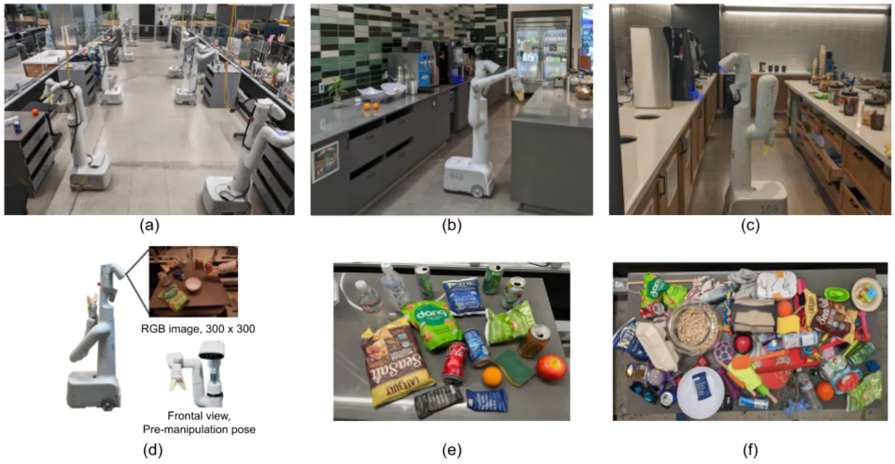
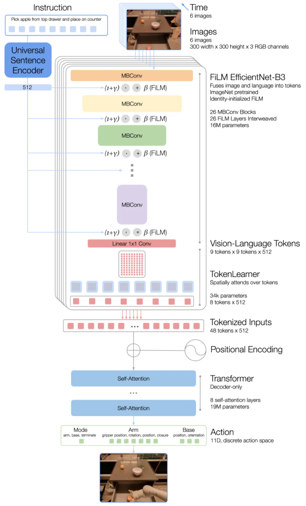
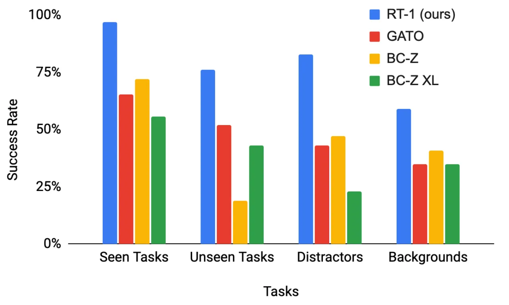
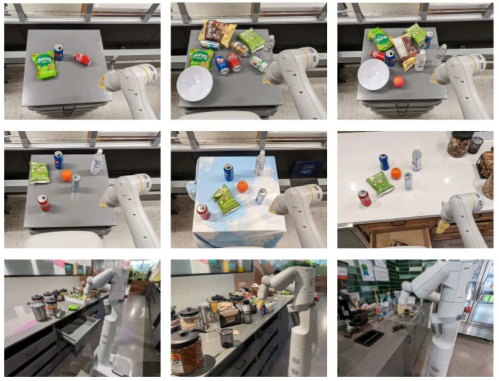
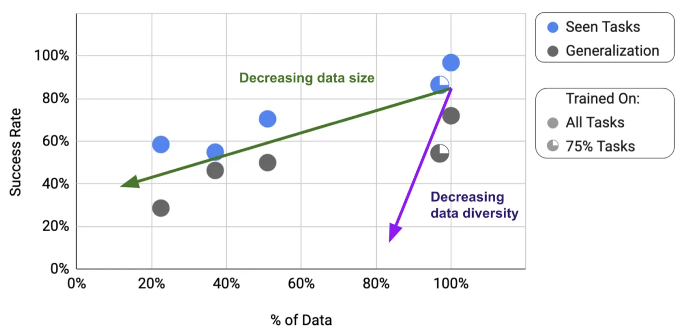

RT-1 是一个专为真实世界机器人控制设计的 Transformer 模型：以 17 个月、13 台机器人收集的 ~130k 次演示进行训练，覆盖 700+ 条任务指令，实现了在已见任务上 97% 的成功率，以及对未见新任务的强泛化能力（76%），远超此前最强的 imitation learning 和多模态大模型基线。
视觉、语言领域已出现能力强大的通用预训练模型，但机器人领域却迟迟未能复制这一成功。 核心瓶颈在于：高质量机器人演示数据稀缺且昂贵，而现有方法往往依赖工程繁琐的自主采集流程或代价高昂的人工演示。 那么，能否在大规模、多样化的机器人数据上训练单一多任务模型，使其对新任务、新环境、新物体实现零样本泛化？
"Open-ended task-agnostic training, combined with high-capacity architectures" enables models to effectively learn from varied robotic data — just as large language and vision models benefit from scale and diversity.


RT-1 将语言指令和历史图像帧作为输入，输出离散化的机器人动作 token。整个架构由三个模块串联组成： 基于 FiLM 调制的 EfficientNet 视觉编码器、压缩 token 的 TokenLearner，以及解码动作的 decoder-only Transformer。 模型仅有 35M 参数，却能在 100ms 预算内以 3Hz 频率实时控制机器人。

图像以预训练的 EfficientNet-B3（ImageNet 初始化）提取特征，生成 9×9×512 的特征图（共 81 个视觉 token）。 语言指令通过 Universal Sentence Encoder 转化为嵌入向量，再以 FiLM（Feature-wise Linear Modulation） 层将语义条件注入视觉编码器，实现指令对视觉特征的逐层调制。 FiLM 层采用恒等初始化，总参数量仅约 16M。
81 个视觉 token 通过 TokenLearner（基于 element-wise 注意力）压缩为 8 个 token，显著降低后续 Transformer 的计算量。 6 帧历史图像产生 48 个 token（8×6），送入 Transformer 处理。 TokenLearner 和 token 复用分别带来 2.4× 和 1.7× 的推理加速，保证实时控制（3 Hz，100ms/步）。
机器人动作包含 11 个维度（7 维手臂关节 + 3 维底座移动 + 1 维模式切换），每维离散为 256 个 bin，使用 categorical cross-entropy loss 和因果掩码训练。 这一设计将连续控制问题转化为分类问题，使 Transformer 架构可以直接被复用于动作预测。
数据采集历时 17 个月，使用 13 台机器人收集了 ~130k 次演示，覆盖 744 项技能（包括拾放、抽屉操作、容器交互等），指令多样性超过 700 条。 数据多样性（任务种类）被实验验证比数据数量更关键：消融研究显示，去除 25% 的任务种类（但保留 97% 的数据量）对泛化能力的损害，等效于将数据集规模缩减 49%。
所有实验均在真实机器人上进行，共计 3000 次评测。基线方法包括 BC-Z（视觉-语言 imitation learning）、Gato（通用多模态大模型）及 SayCan 框架。 评估维度覆盖：已见/未见任务成功率、干扰物鲁棒性、背景鲁棒性、长时序任务执行，以及异构数据融合收益。
| 评测场景 | BC-Z | Gato | RT-1（本文） | 提升 |
|---|---|---|---|---|
| 已见任务（200+ 条指令） | 72% | 65% | 97% | +25% vs BC-Z |
| 未见新任务（21 条指令） | 52% | 52% | 76% | +24% vs next best |
| 干扰物鲁棒（hard 场景） | 47% | — | 83% | +36% |
| 背景鲁棒性 | 41% | — | 59% | +18% |
| 长时序任务 Kitchen1（SayCan） | 13% | 0% | 67% | +54% vs BC-Z |
| 长时序任务 Kitchen2（未见场景） | 13% | 0% | 67% | — |



作者明确指出："It may not be able to surpass the performance of the demonstrators." 模型本质上是在复刻人类演示者的行为，难以超越演示者的操作水平，也无法通过探索发现更优策略。
"Generalization to new instructions is limited to combinations of previously seen concepts" — 模型能够组合已学的技能与物体，但无法泛化到训练中从未出现过的全新动作或物体类别。
RT-1 适用于 "a large but not very dexterous set of manipulation tasks"，对精细化抓取（如插针、装配）等高灵巧度任务的适用性有限。
作者承认："robustness to backgrounds and environments could be further improved by greatly increasing the environment diversity." 当前数据来自相对固定的厨房场景，对更广泛环境的适应性仍受限。
3 Hz 的控制频率（100ms 预算）约束了可部署的模型规模。相比无实时约束的架构，这在模型容量与推理速度之间形成了权衡。